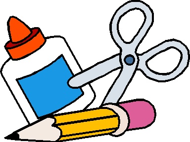

Teaching Point:
Today we will learn how to use Cut, Copy, and Paste on the Computer.
Cut, Copy, and Paste

One of the reasons that writing on the computer can be easier than writing with a pencil and paper, is that if we need to write something twice, or move it to a different part of the page, we don't need to write it over again. We can use Cut, Copy, and Paste.
When you Cut or Copy something you are telling the Computer to remember it. Then when you want the computer to put it somewhere else, you press Paste. The computer will then paste a copy of whatever the last thing you cut or copied was. The only difference between Cut and Copy is that when you Cut something it disappears, and when you Copy something it does not disappear. Once you Cut or Copy something, you can Paste it as many times as you want.
- To Cut - highlight the thing that you want to cut and go to EDIT - CUT.
- To Copy - highlight the thing that you want to copy and go to EDIT - COPY.
- To Paste - highlight the thing that you want to paste and go to EDIT - PASTE.
Today's Assignment
Cut and Paste the sentences on the Morning Routines Worksheet so that they are in the right order.
Back to School Portal